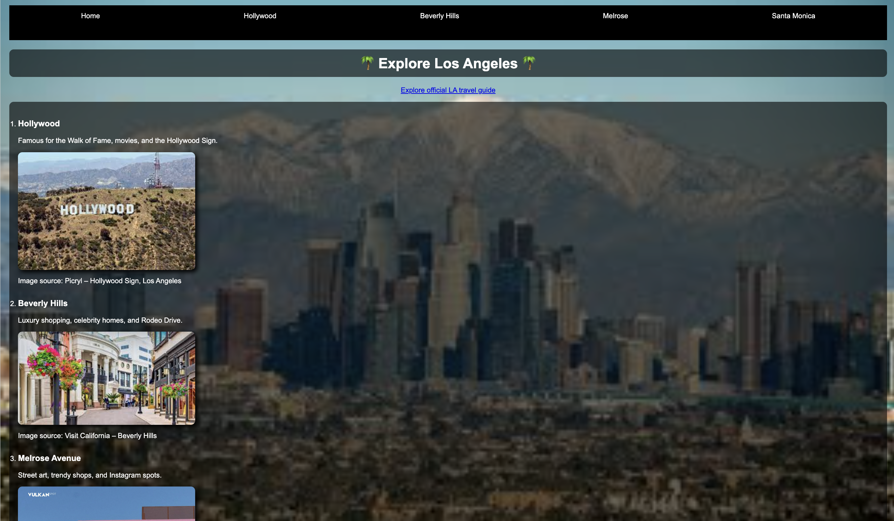

This is my best work because it was my first full page website with a navigation bar, several images, clean structure, and I had the ability to create whatever I wanted as long as we followed the grading rubric.
The inspiration behind this was about exploring Los Angeles with the feeling that you can trust to go to these types of places. I wanted to make this website with verified places that are good to go to by someone who lives around the area and has tested them out herself.
